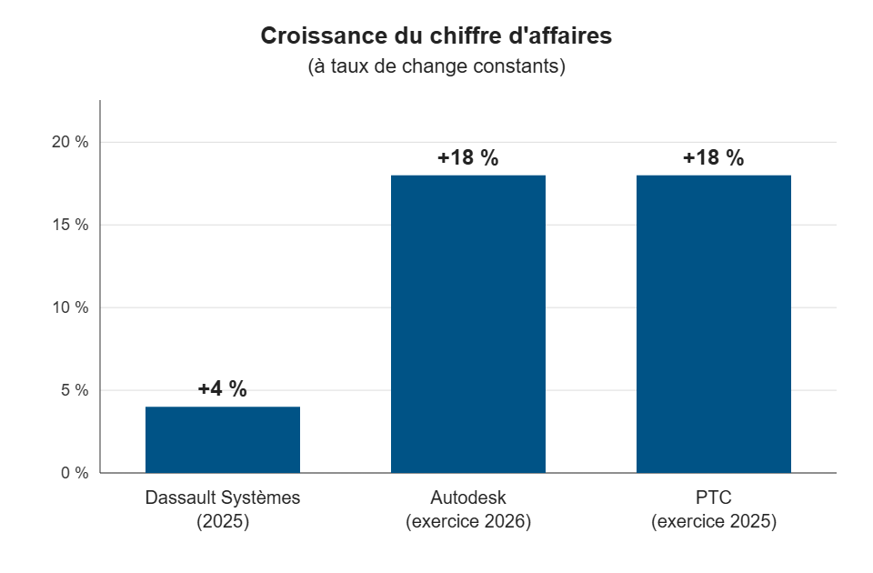

L'économie de Dassault Systèmes
Dassault Systèmes a été créée en 1981 et son siège est à Vélizy-Villacoublay. L'entreprise est cotée en bourse (CAC 40) et compte environ 25 000 salariés. Cette page présente ses chiffres : combien elle gagne, où, et comment elle se compare à ses concurrents.

Le chiffre d'affaires
Le chiffre d'affaires est la somme d'argent que l'entreprise encaisse en vendant ses logiciels et ses services. Il est passé de 4,86 milliards d'euros en 2021 à 6,24 milliards en 2025.
- 2022 : environ +17 %, la plus forte hausse de la période.
- 2023 et 2024 : environ +5 % puis +4 %.
- 2025 : +0,4 % seulement, la croissance s'est presque arrêtée.

Le résultat net
Le résultat net est ce qu'il reste à l'entreprise une fois toutes les dépenses payées. Il a augmenté de 774 millions d'euros en 2021 à environ 1,2 milliard en 2024, puis il a légèrement baissé en 2025.

Les activités
L'entreprise vend ses logiciels dans trois grands secteurs :
- L'innovation industrielle (56 %) : aéronautique, automobile, construction navale.
- L'innovation grand public (25 %), dont le logiciel SOLIDWORKS.
- Les sciences de la vie (19 %) : santé et recherche médicale.

Les régions
Les ventes sont réparties presque à égalité entre les Amériques (39 %) et l'Europe (38 %). L'Asie représente 22 % du total.
Comment l'entreprise gagne de l'argent
Dassault Systèmes vend surtout des abonnements à ses logiciels, ce qui lui apporte des revenus réguliers chaque année :
- Les abonnements et le support représentent 4,62 milliards d'euros (environ +6 %).
- Les licences vendues à l'unité baissent à 1,02 milliard d'euros (environ -6 %).
- Au total, environ 82 % des ventes de logiciels reviennent chaque année.

Les concurrents
Dassault Systèmes est en concurrence avec Siemens (Allemagne), Autodesk et PTC (États-Unis). Le graphique compare la croissance de leur chiffre d'affaires sur leur dernière année publiée, à taux de change constants.
- Dassault Systèmes : 6,24 Md € en 2025, soit +4 % (+0,4 % en euros).
- Autodesk : 7,2 Md $ sur l'exercice 2026, soit +18 %.
- PTC : 2,74 Md $ sur l'exercice 2025, soit +18 %.
- Siemens : son activité logiciels a des revenus récurrents de 5,3 Md €, en hausse d'environ 13 % par an depuis 2021.
Dassault Systèmes reste un des plus gros acteurs, mais ses concurrents américains ont grandi plus vite récemment. Les années de clôture ne sont pas les mêmes pour toutes les entreprises.
Les prévisions
Pour 2026, Dassault Systèmes prévoit une croissance de son chiffre d'affaires de 3 % à 5 % (à taux de change constants). Après les résultats du deuxième trimestre 2026 (chiffre d'affaires en hausse de 4 %), l'entreprise a confirmé ces objectifs. Ces chiffres sont des prévisions : ils peuvent changer.
Bilan
Dassault Systèmes est une entreprise solide, avec des revenus réguliers grâce aux abonnements. Sa croissance a nettement ralenti en 2025, mais les prévisions pour 2026 restent positives.
Pour comprendre les mots
Quelques définitions sur d'autres sites :
Sources : Dassault Systèmes (relations investisseurs), résultats d'Autodesk (exercice 2026), de PTC (exercice 2025) et de Siemens (exercice 2025).